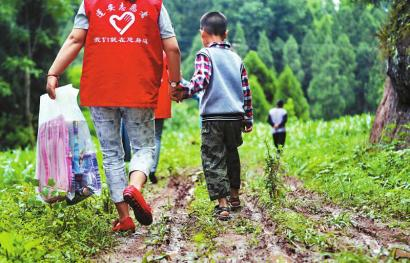
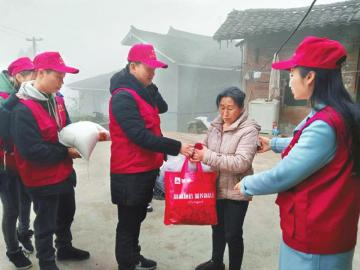

社会治理的青年志愿服务探索
桂电志愿者网 日期：2017-05-04 来源：四川日报

蓬安县的青年志愿者深入乡村“一对一”帮扶留守儿童
徐霞(右)为贫困户检查身体

吕佳进行舞蹈教学志愿服务

吕佳(右一)组织志愿者慰问贫困户
缺教师、缺医疗、缺产业……偏远农村的各种缺失,正被丹棱、沐川等地的志愿者弥补——
“这几天在准备资料,我们想推荐5个产业团支部去参加创业大赛。”5月2日,小长假后上班首日,眉山市丹棱县张场镇党政办主任、团委书记吕佳就忙了起来,除准备创业大赛,还要细化村里一项公益志愿活动方案,“我们筹集到一些资金和物资,准备给村里留守儿童送去。”
前不久,我省表彰了一批脱贫攻坚优秀第一书记和驻村干部,其中有8名青年团干部,吕佳便是其中一员。
众所周知,共青团的优势不在于资金、技术、项目等硬投入,而在于朝气蓬勃、充满活力的干部队伍。当前,在升级农村社会治理探索中,青年团干部有哪些作为?近日,记者赴丹棱县和沐川县,听部分受表彰的青年团干部介绍他们的行动经验。
一个人发动一群人支教
让山里娃也会跳爵士舞
山里娃娃也能跳爵士舞?记者在丹棱县张场镇万年村采访时看到了这一幕。
吕佳2014年来到张场镇后,发现山区学生可选择的课余活动较少,很多孩子漫山遍野乱跑,成了当地社会治理的安全隐患之一。让孩子们学跳舞如何?有舞蹈基础的吕佳当起了志愿者,每周抽一天下班时间,骑半小时自行车到仁兴小学,教住校学生跳起了爵士舞。
一段时间后,吕佳意识到,丰富孩子们的业余生活,单凭个人力量远远不够,还要吸引更多人来帮忙。去年下半年,吕佳在一次志愿服务活动上,找到了另外两位舞蹈老师,希望她们也能教村里的孩子跳舞。“山里孩子们对舞蹈的浓厚兴趣,让两位老师很感动,立刻答应下来。”吕佳说,她们握紧了志愿接力棒,从此,万年村的孩子们有了稳定的舞蹈老师。
6月,吕佳执教的舞蹈教学点将在张场镇开学,今后附近的孩子们都能享受到专业的舞蹈培训。
有人问吕佳,“做了志愿者,陪家人的时间少了,你觉得值吗?”吕佳回答说:“这些山区的孩子,你花1小时陪他们跳舞、聊天,他们就会看到不一样的太阳。”
今年初,四川共青团助力脱贫攻坚工作会明确提出,志愿服务要“扩面、重线、抓点”。
“志愿服务是社会治理工作必不可少的助推力,用好了,效果很显著。”吕佳持续两年的支教行动,目前非常受孩子们欢迎。“今天我们学什么?”这是她经常听到的问题。这也让她思考,如果自己调走了怎么办?怎样让志愿服务行动常态化?
去年10月,吕佳和同事们在眉山市成立了志愿服务队,并在张场镇辖区的9个贫困村成立了9支志愿服务分队,探索打造了“1+5+N”的脱贫志愿服务模式,即1个队长、5个专业能手、N个社会志愿者。志愿服务队针对产业发展、电商销售、学习宣传、纠纷调解、便民服务等方面对贫困村进行精准帮扶,目前已吸纳志愿者200余名。
“通过一个个志愿者的服务,发动更多青年关注身边的贫困群众及困境儿童,通过他们的积极奉献,营造出和谐温暖的社会氛围,提升农村群众的获得感和幸福感。”吕佳说。
●最新消息
共青团四川省委今年计划组建“青春扶贫志愿行动队”100支,并围绕贫困村需求,有的放矢确定服务内容。
遴选400名西部志愿者
用专业技能助贫困县摘帽
“你看,电视、冰箱和洗衣机啥都有,没想到我75岁了还能住上这么漂亮的房子。”5月3日,沐川县大楠镇金盆村贫困户张永兰一边领着记者看她去年搬进的新房,一边感叹。
金盆村村支书吕天奎告诉记者,该村贫困户的新房,所用建材和家电主要由爱心企业赞助,住户个人投工投劳,相比市场价,每户可节约成本2万多元。得来这个“便宜”,离不开乐山市精神病医院团支部书记、沐川县大楠镇金盆村党支部第一书记徐霞的努力。
徐霞也是此次获表彰的青年团干部之一。2015年,作为医院团干部的她有了新身份——金盆村党支部第一书记。
金盆村贫困户因病、因残致贫比例较大,有的村民得了慢性病未及时就医,一拖数年,这让徐霞找到了努力方向。她利用在医院担任团支书的职业优势,为村民开展免费诊治服务和医学常识讲座,还为贫困户建立了健康医疗卡。
村民王修学经常头晕。“他血压高,中风瘫痪风险大,一旦丧失劳动能力,将迈入贫困行列。”徐霞发现这一情况后,对老人进行跟踪诊治,几个月后,老人的血压降了下来。现在王修学一见到徐霞就热情招呼,还硬要把自家“新鲜出炉”的鸡蛋塞给她。
“乡亲们不能重蹈因病致贫、因病返贫的覆辙。开展医疗志愿服务是我的必修课。”徐霞还积极争取责任帮扶单位——乐山市精神病医院送医疗下乡,已累计免费发放价值4000余元的药品和300余份宣传年画和健康手册。
徐霞积极整合社会资源,推动金盆村脱贫攻坚。在她的努力下,六兴畜禽养殖专合社诞生,为贫困户援建的20座鸡棚已建成,14公里村组道路完成硬化,一个村民聚居点完成,新建农房48户。其中,很多建材和家用电器由徐霞和同事拉来的爱心企业赞助。
在参与社会治理、助力脱贫攻坚的行动中,省级青联、青企协、青民企协、青志协等团属青年团体和协会组织,也积极引导各方力量参与。截至去年12月,共青团四川省委通过争取和设计扶贫开发项目、举办公益活动、现场募集等方式,共筹集扶贫资金和物资超过9000万元。这些资金将重点投向今年计划摘帽的贫困县,解决各类农村社会治理难题。其中,“我要上大学”希望工程助困入学项目将在16个摘帽县全覆盖,“团银挂职”项目将帮助涉农青年创业等。
●最新消息
共青团四川省委今年将遴选具备电子商务、农业技能、产业发展等专业技能的西部计划志愿者400名,在16个摘帽县中,每相邻3个村安排2名志愿者,全程参与当地脱贫攻坚工作。
【责任编辑：四川日报】